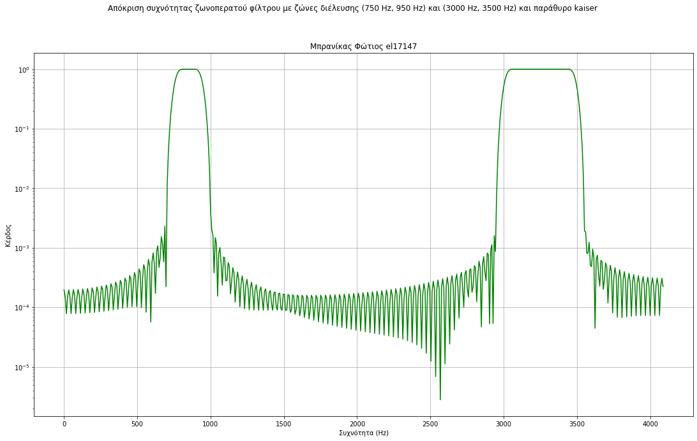
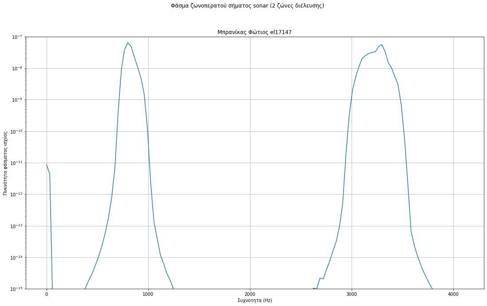
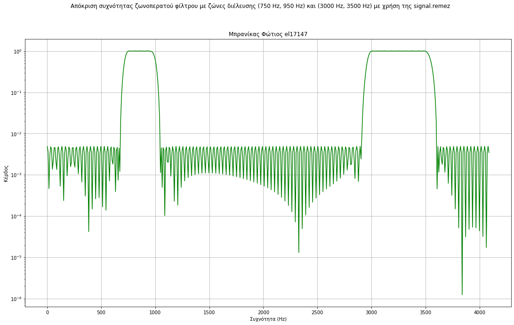

Μέρος 2 Ζωνοπερατό φίλτρο¶
Ζωνοπερατό φίλτρο με ζώνες διέλευσης (750 Hz, 950 Hz) και (3000 Hz, 3500 Hz)¶
Παρακάτω πραγματοποιείται ο σχεδιασμός ζωνοπερατού φίλτρου με ζώνες διέλευσης: (750 Hz, 950 Hz) και (3000 Hz, 3500 Hz) και η εφαρμογή του στο σήμα sonar. Χρησιμοποιήθηκαν δύο διαφορετικές μέθοδοι για τον σχεδιασμό αυτού του φίλτρου: η μέθοδος αναλυτικού υπλογισμού της κρουστικης απόκρισης με εφαρμογή παραθύρου και η μέθοδος ισοϋψών κυματώσεων. Κατά τον σχεδιασμό του φίλτρου με την μέθοδο ισοϋψών κυματώσεων, χρειάστηκε να γίνει κατάλληλη χρήση της συνάρτησης signal.remez για την οποία έπρεπε να οριστούν κατάλληλα τα όρια των ζώνων διέλευσης και αποκοπής ετσι ώστε να αποφευχθεί οποιοδήποτε πιθανό φαινόμενο απότομης μεταβολής της έντασης στην ζώνη διέλευσης.
import warnings
import sounddevice as sd
import scipy.io.wavfile
from scipy import signal
import scipy.io.wavfile
import numpy as np
import matplotlib.pyplot as plt
warnings.filterwarnings('ignore')
Σήμα sonar¶
# Ανάγνωση δειγμάτων σήματος από txt file
with open('sima.txt') as f:
s = [float(x) for x in f]
s=np.array(s)
print('μέγεθος σήματος=', s.shape)
Fs=8192
sd.play(20*s,Fs)
μέγεθος σήματος= (6565,)
Ζωνοπερατό φίλτρο με ζώνες διέλευσης (750 Hz, 950 Hz) και (3000 Hz, 3500 Hz)¶
f1=750
f2=950
f3=3000
f4=3500
Ts=1/Fs
f2m1=(f2-f1)
f2p1=(f2+f1)/2
f4m3=(f4-f3)
f4p3=(f4+f3)/2
N=256
Σχεδιασμός φίλτρου με αναλυτικό υπολογισμό της κρουστικής απόκρισης και παράθυρο¶
t=np.arange(-(N-1),N-1,2)*Ts/2;
band1=2/Fs*np.divide(np.multiply(np.cos(2*np.pi*f2p1*t),np.sin(np.pi*f2m1*t))/np.pi,t)
band2=2/Fs*np.divide(np.multiply(np.cos(2*np.pi*f4p3*t),np.sin(np.pi*f4m3*t))/np.pi,t)
hbp2=band1+band2
hbpw2=np.multiply(hbp2,signal.kaiser(len(hbp2),5));
fig = plt.figure()
plt.suptitle('Απόκριση συχνότητας ζωνοπερατού φίλτρου με ζώνες διέλευσης (750 Hz, 950 Hz) και (3000 Hz, 3500 Hz) και παράθυρο kaiser')
plt.title('Μπρανίκας Φώτιος el17147')
plt.grid()
plt.xlabel('Συχνότητα (Hz)')
plt.ylabel('Κέρδος')
fig.set_size_inches(18.5, 10.5)
freq,resp_pm = signal.freqz(hbpw2);
plt.semilogy(0.5*Fs*freq/np.pi, np.abs(resp_pm), 'g-')
plt.show()

Εφαρμογή φίλτρου στο σήμα sonar¶
s_bp2=signal.convolve(s,hbpw2,'same');
f, Pxx_den = signal.welch(s_bp2, Fs, noverlap=128, nperseg=256)
fig = plt.figure()
plt.suptitle('Φάσμα ζωνοπερατού σήματος sonar (2 ζώνες διέλευσης)')
plt.title('Μπρανίκας Φώτιος el17147')
plt.grid()
plt.xlabel('Συχνότητα (Hz)')
plt.ylabel('Πυκνότητα φάσματος ισχύος')
plt.ylim((1e-15,1e-7))
fig.set_size_inches(18.5, 10.5)
plt.semilogy(f, Pxx_den)
sd.play(20*s_bp2,Fs)

Σχεδιασμός Ζωνοπερατού φίλτρου ισουψών κυματώσεων με ζώνες διέλευσης (750 Hz, 950 Hz) και (3000 Hz, 3500 Hz)¶
bpass2 = signal.remez(256, [0, f1*0.9, f1, f2, 1.1*f2, f3*0.97, f3, f4, f4*1.03, Fs/2],
[0, 1, 0, 1, 0], fs=Fs)
fig = plt.figure()
plt.suptitle('Απόκριση συχνότητας ζωνοπερατού φίλτρου με ζώνες διέλευσης (750 Hz, 950 Hz) και (3000 Hz, 3500 Hz) με χρήση της signal.remez')
plt.title('Μπρανίκας Φώτιος el17147')
plt.grid()
plt.xlabel('Συχνότητα (Hz)')
plt.ylabel('Κέρδος')
freq,resp_pm = signal.freqz(bpass2)
fig.set_size_inches(18.5, 10.5)
plt.semilogy(0.5*Fs*freq/np.pi, np.abs(resp_pm), 'g-')
plt.show()

Εφαρμογή φίλτρου στο σήμα sonar¶
s_bpass2 = signal.convolve(s,bpass2,'same')
f, Pxx_den = signal.welch(s_bpass2, Fs, noverlap=128, nperseg=256)
fig = plt.figure()
plt.suptitle('Φάσμα ζωνοπερατού σήματος sonar (2 ζώνες διέλευσης)')
plt.title('Μπρανίκας Φώτιος el17147')
plt.grid()
plt.xlabel('Συχνότητα (Hz)')
plt.ylabel('Πυκνότητα φάσματος ισχύος')
plt.ylim((1e-15,1e-7))
fig.set_size_inches(18.5, 10.5)
plt.semilogy(f, Pxx_den)
sd.play(20*s_bpass2,Fs)
for
File "<ipython-input-7-9884b6f1db20>", line 15
for
^
SyntaxError: invalid syntax